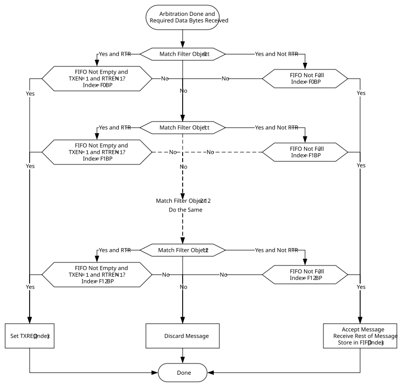

The CAN FD Protocol module starts acceptance filtering after the arbitration field and when the first three data bytes of a message are received. Figure 38-14 describes the flow of message filtering.
The module loops through all the filters, starting with Filter 0, which is the highest priority filter. The message in the Receive Message Assembly Buffer (RXMAB) is compared to the filter and mask. In case the message matches the filter and it is received without any errors, the message will be stored into the RX FIFO pointed to by the FnBP. Acceptance filtering is stopped and the associated RFIF bit is set.
1, RTREN =
1). If none of the filters match, the received message will be discarded.
1,
RTREN = 0), the module will discard the received message.